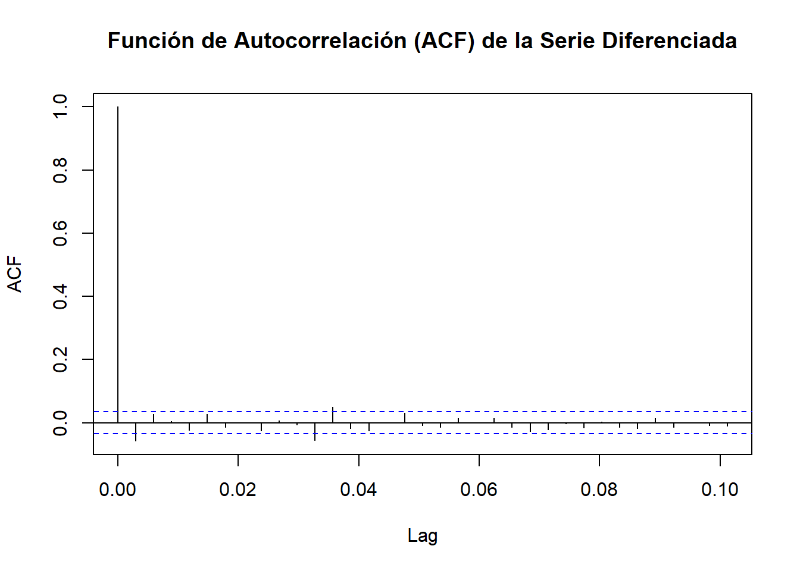

Capítulo 4 Avance 5 ARIMA
Como alternativa, haremos el modelo ARIMA. ARIMA es una integración de 2 métodos, AR (Auto Regresión) y MM (Media Móvil). Queremos el método ARIMA teniendo en cuenta nuestros datos de estacionalidad, por lo que usaremos STLM con el método ARIMA.
Dividiremos nuestros datos en entrenamiento y testeo. Tenemos datos de 2014 - 2021 e intentaremos pronosticar el precio de los últimos 6 meses.
6 meses = 7 * 4 * 6 = 168
# Data de entrenamiento
train <- head(data_ts, -168)
# Data de Test
test <- tail(data_ts, 168)
gold_arima_stl <- stlm(y = train, method = "arima")
gold_arima_stl$model## Series: x
## ARIMA(2,1,2)
##
## Coefficients:
## ar1 ar2 ma1 ma2
## 0.1980 -0.3136 -0.2090 0.4049
## s.e. 0.2254 0.2368 0.2169 0.2295
##
## sigma^2 = 76562: log likelihood = -14490.16
## AIC=28990.33 AICc=28990.36 BIC=29018.474.1 Pronóstico Con Modelo Arima
Después de hacer el modelo, intentaremos pronosticar usando nuestros datos de prueba y visualizarlo.
# Pronóstico
gold_ARIMAforecast <- forecast(gold_arima_stl, h = 168)
# Visualización
data_ts %>%
autoplot() +
autolayer(gold_arima_stl$fitted, lwd = 0.5,
series = "ARIMA model") +
autolayer(gold_ARIMAforecast$mean, lwd = 0.5,
series = "Forecast 1 year")
En el gráfico podemos ver que la línea roja (modelo ARIMA) con los datos de entrenamiento es bastante similar a nuestros datos originales. Desafortunadamente, la línea azul (Pronóstico) todavía tiene una desviación de los datos originales. Comprobaremos nuestro error con MAPE
## [1] 0.5561707## [1] 4.483968El error del modelo Arima es de 0.5561707%, y el error del pronóstico es 4.483968%.
4.2 Evaluación del Modelo
Después de hacer la predicción, evaluaremos nuestra modelo ARIMA con verificación de suposiciones.
4.2.1 No Autocorrelación
H0: no tiene autocorrelación
H1: tiene autocorrelación
##
## Box-Ljung test
##
## data: gold_arima_stl$residuals
## X-squared = 0.0055182, df = 1, p-value = 0.9408p-value = 0.94 > 0.05 (No correlación)